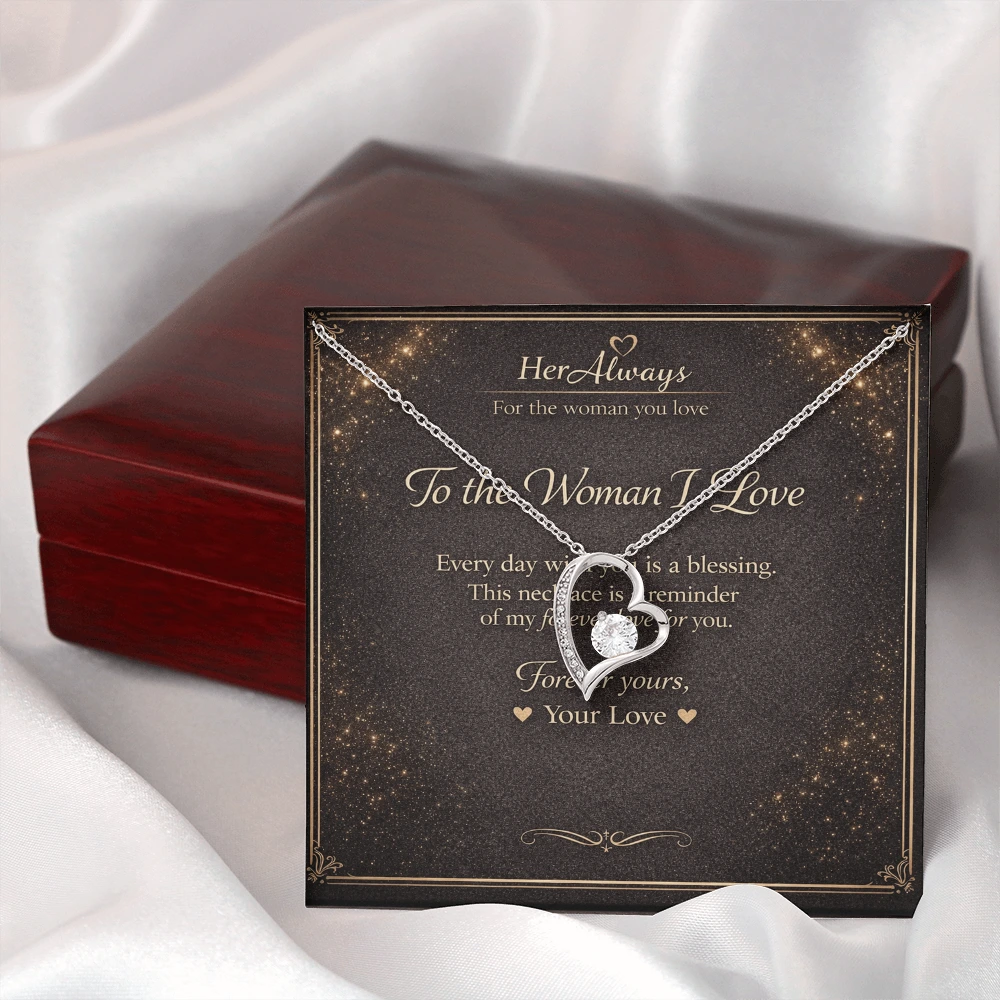

Giving jewelry symbolizes love, commitment, protection, gratitude and lasting memory. Which of those you are sending depends on the piece, the occasion and who is giving it to whom. A ring says something different from earrings, and a gift to a partner says something different from a gift to a friend.
Jewelry works as a gift because it gets worn, kept and looked at for years. A card is read once. A necklace goes on every morning, so the meaning you attach to it keeps showing up long after the day you gave it.
This guide covers what each type of jewelry usually says, what metals and stones add, which occasions call for what, and the mistakes that send the wrong message.
The Short Version: What Each Piece Says
| Piece | What it usually symbolizes | Common occasions |
|---|---|---|
| Ring | Commitment and promise | Engagement, wedding, anniversary |
| Necklace | Closeness and love, since it sits near the heart | Anniversary, birthday, Valentine's Day, family gifts |
| Bracelet | An unbroken bond, loyalty, friendship | Partners, friends, family, graduation |
| Earrings | Appreciation and everyday affection | Birthday, thank-you, just because |
| Birthstone, name or initial piece | “I know who you are” | Birthday, new mother, graduation |
What Giving Jewelry Symbolizes
Almost every jewelry gift carries one or more of six meanings. Knowing which one you want to send makes the choosing much easier.
Love and affection
This is the one most people think of first. Hearts, infinity loops and knots say it openly, but a plain chain can say it too, because the feeling comes from the giver and not the design.
Commitment
Rings are the strongest commitment symbol, but any piece can mark a promise. An anniversary pendant, or a bracelet engraved with a date, can say “I'm staying” without a proposal attached. Diamonds are traditionally read as strength and permanence because of how hard the stone is.
Protection and good luck
Before jewelry was romantic, it was protective. Amulets and talismans were given to guard someone from harm or to bring luck on a journey. That tradition survives in evil eye charms, religious pendants and the small lucky charm a parent slips into a child's bag.
Gratitude and appreciation
A gift of thanks, to a mother, a mentor or a friend. These are usually simpler pieces with no romantic signal, chosen to say “you matter to me.”
Memory and milestones
Graduations, a first baby, a retirement, a loss. Jewelry turns a moment into something you can wear, which is why a bracelet from a graduation can still remind someone of that day decades later.
Belonging and family
Heirlooms, matching pieces and jewelry passed down tie people to a family and its story. Historically, jewelry also signaled rank and status, which is part of why gold is still chosen when a gift is meant to feel significant.
Why Jewelry Means More Than Most Gifts
Three things set it apart from flowers, gadgets or clothes.
- It is worn. Each time she puts it on, the gift and the giver come back to mind.
- It lasts. Good jewelry outlives trends and often becomes an heirloom, with the story of who gave it attached.
- Choosing it shows attention. Noticing that she wears silver, or that she likes small pieces, is part of the message.
What Each Type of Jewelry Means as a Gift
The piece you choose changes the message more than anything else. Here is how each one is usually read.
Rings
Usually says: commitment, promise, belonging
Best for: engagements, weddings, anniversaries, promise gifts
A ring is the most loaded piece in the box. Finger and hand matter: in much of the world, a ring on the left ring finger signals engagement or marriage, while a ring on the right hand or another finger is usually just a gift. The old idea that a vein runs from that finger straight to the heart is a charming belief, not anatomy.
Think twice if: you are not ready to be read as proposing. Choose a style and a finger that make your meaning clear.
Necklaces
Usually says: closeness, love, connection
Best for: romantic gifts, anniversaries, birthdays, family
A necklace sits close to the heart, and a pendant can carry a symbol, a name or a message. That makes it the most personal piece to give. What a necklace means to a girl or woman depends on the relationship stage: early on, a small heart or initial says “I'm thinking of you,” while a love knot or an engraved date says something much deeper.
Because this is where most romantic gifts land, we wrote separate guides. See 15 necklace symbols and their meanings in love for what each design represents, and what giving a necklace means in a relationship for the occasion-by-occasion view.
Bracelets
Usually says: an unbroken bond, loyalty, friendship
Best for: partners, friends, family, graduations
A bracelet is a circle with no start or end, which is why it is read as lasting connection. It is also the most flexible gift: it works for a partner, a best friend or a sibling, and it is the easiest piece to give to a man. Charm bracelets add a second meaning, because each charm records a moment and the bracelet grows with the relationship.
Earrings
Usually says: appreciation, elegance, everyday affection
Best for: birthdays, thank-yous, “just because”
Earrings rarely carry one fixed symbol, so context does the talking. They are a low-pressure way to say you notice and appreciate someone, and they are worn daily, so a pair she actually likes keeps the gift present. If a man gives you earrings, it most often reads as affection or appreciation without the weight of a ring.
What the Metal and the Stone Add
Material shifts the message too. These are traditional associations, not rules, and cultures differ.
| Material | Traditional association |
|---|---|
| Gold | Prosperity, honor and lasting value. Given at weddings and births in many cultures, especially across South and Southeast Asia. |
| Silver | Understated and modern, easy for everyday wear. The traditional 25th anniversary metal. |
| Platinum | Rarity, endurance and long-term commitment. |
| Diamond | Strength and permanence, hence its place in engagements. |
| Birthstone | The person herself: her month, her identity. |
| Colored stones | Green is often tied to growth and renewal, blue to trust and loyalty, red to passion. |
What Jewelry Says on Different Occasions
| Occasion | What it says | Pieces that fit |
|---|---|---|
| New relationship | Thinking of you, no pressure | Small heart, initial, simple pendant |
| Birthday | I know you | Birthstone, name, initial |
| Anniversary | I still choose you | Infinity, love knot, engraved date |
| Engagement or wedding | A formal promise | Ring |
| Long distance | We're connected anyway | Moon pendant, matching pieces |
| Graduation or new job | I'm proud of you | Bracelet, birthstone piece |
| Mother or parent | Thank you | Locket, name pendant, birthstone |
| Friend | Loyalty | Bracelet |
| Just because | You're on my mind | Any small piece she'd wear |
Buying for a wife? Our guide to the anniversary necklace for your wife matches pieces to the year of marriage. For a girlfriend, see the 12 best necklace gifts for your girlfriend.
A Short History of Giving Jewelry
People have been giving jewelry for thousands of years. A few milestones, kept general because details vary by source and region:
- Ancient Egypt, Greece and Rome: jewelry marked rank and devotion, and was given as protective amulets. Egyptians are often said to have exchanged simple reed or hemp rings as a sign of commitment, and Romans used betrothal rings.
- Medieval and Renaissance Europe: “posy” rings carried short engraved verses inside the band, the earliest version of personalized jewelry.
- Ireland: the Claddagh ring combines hands, a heart and a crown for friendship, love and loyalty.
- Victorian era: mourning jewelry preserved the memory of a loved one, and “acrostic” pieces used the first letters of gemstones to spell words like REGARD.
- South and Southeast Asia: gold, often high-purity, is given at weddings and births as both blessing and security, and passed between generations.
- Mediterranean and Middle East: evil eye charms are worn and gifted for protection.
The forms changed. The idea did not: a worn object that holds a feeling.
Superstitions and What Not to Gift
There is no universal list of forbidden jewelry, but a few cases deserve care.
A ring that says more than you mean
A ring for the left ring finger will be read as a proposal. If that is not your intention, pick a different style or a different piece.
A symbol she does not share
Crosses, evil eye charms and other faith or protection symbols only mean something to people who hold the belief. Give them to someone who values the tradition, not as a default.
A commitment symbol too early
“Forever” engravings and love knots can feel heavy in a new relationship. Save them for when the relationship has earned them.
Jewelry as an apology
A piece given right after an argument can look like an attempt to smooth things over. Apologize first, give the gift later.
Old superstitions
Some traditions say pearls bring tears, and some say opals are unlucky as gifts, a belief often traced to a 19th-century novel. Others read pearls as purity and wisdom, and opal is the October birthstone. Most people today ignore these ideas, but if you know she cares about them, choose something else.
For the spiritual side of jewelry, including whether it can carry energy, see the FAQ below.
How to Make a Jewelry Gift Say What You Mean
- Decide the message first. Love, gratitude, commitment or celebration? The meaning picks the piece, not the other way around.
- Match her style. Notice whether she wears gold or silver, small pieces or statement ones. A symbol she won't wear carries no meaning at all.
- Personalize it. A name, initial, birthstone or date turns a nice piece into hers alone.
- Write one real sentence. “Still choosing you.” “Thank you for always being there.” “I'm proud of you.” A single honest line carries more than a long card.
- Present it with care. A gift box and a handwritten note make the moment part of the memory.

Go Deeper: Guides by Meaning
Once you know the message, these guides cover the specific symbols:
- 15 necklace symbols and their meanings in love
- Infinity necklace meaning: endless love
- Love knot necklace meaning: deep commitment
- Heart necklace meaning: love and affection
- Interlocking hearts necklace meaning: two hearts joined
- Moon necklace meaning: connection across distance
- Butterfly necklace meaning: new beginnings
- Necklace gift meaning in a relationship, by occasion
- Romantic gift ideas for your girlfriend, including options beyond jewelry
If a Necklace Is the Message

Our Forever Love Necklace pairs a heart pendant with a message card in a gift box, so the symbol and the words arrive together. For a serious, long-term relationship, the Love Knot Necklace says more.
About This Guide
This guide is written by Elena Marsh for HerAlways. The meanings here are traditional and widely shared, not rules, and they change by culture, family and person. Historical notes are general summaries. Because we sell necklaces, we point to our own designs where they fit, and we say so when a piece is not the right choice.
FAQ: What Jewelry Symbolizes as a Gift
What does giving jewelry symbolize?
Giving jewelry symbolizes love, commitment, protection, gratitude and lasting memory. The specific meaning depends on the type of jewelry, the occasion and the relationship between the giver and the person receiving it.
What does it mean when someone gives you jewelry?
It usually means they want to mark something: affection, appreciation or an occasion. Because jewelry is worn and kept, it signals more thought than a disposable gift. Read it in context, since a ring for the left ring finger means something very different from earrings given just because.
What does giving a necklace to a girl mean?
A necklace is worn close to the heart, so it usually signals affection and closeness. In a romantic relationship it can range from a light "I'm thinking of you" (a small heart or initial) to a deeper commitment (a love knot or an engraved date). Our necklace gift meaning guide breaks it down by occasion.
What does a bracelet gift symbolize?
A bracelet's unbroken circle is usually read as a lasting bond, loyalty or friendship. It is also the most flexible piece to give: it suits partners, friends and family, and men as well as women.
What does it mean when a guy gives you earrings?
Most often appreciation or affection without the formal weight of a ring. Earrings rarely carry one fixed meaning, so context decides. A pair that matches your style usually just says he pays attention.
Which jewelry should not be gifted?
Nothing is universally forbidden, but be careful with rings that could read as an engagement, symbols the person does not share (religious or protective ones), and pieces that ignore her style or metal sensitivities. Some traditions also avoid gifting pearls or opals, though many people ignore those beliefs.
Can jewelry carry negative energy?
That is a spiritual belief, not something that can be tested. Many traditions hold that jewelry absorbs energy from its wearer or previous owner, which is why some people cleanse inherited pieces. If it matters to the person receiving your gift, a brand-new piece avoids the question.
What does jewelry mean spiritually?
In many traditions jewelry works as a talisman or amulet: something worn for protection, blessing or devotion. Evil eye charms, religious pendants and prayer beads are common examples. The meaning comes from the tradition and from what the wearer believes, not from the metal itself.
What does God say about wearing jewelry?
Religious traditions differ. Many treat jewelry as acceptable and even sacred, as with wedding rings and religious pendants, while some emphasize modesty or simplicity. If it matters in your situation, your own faith community or text is the best source, and the person you are gifting can tell you what feels right to them.
Final Thoughts
Jewelry symbolizes whatever the giver and the receiver agree it does. The traditions give you a vocabulary: rings for promises, necklaces for closeness, bracelets for bonds, earrings for appreciation. The gift only becomes meaningful when you choose the piece for the person, and say the one sentence that makes it hers.